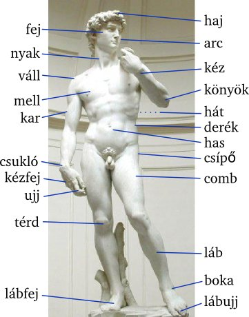
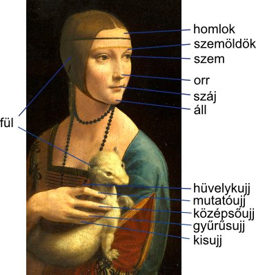

Primii pași · Lecția 11
Părțile corpului
Numește părțile corpului și exersează expresiile din exemple și din înregistrări.
În această pagină
În această lecție învățăm o mulțime de cuvinte noi: numele părților corpului. Totodată, vom vedea cum se exprimă în maghiară relațiile de posesie.
Să începem cu părțile corpului. Am scris numele lor pe cele două imagini de mai jos, a unei statui și a unui portret cunoscut. Am adunat cuvintele în tabelele de lângă imagini.
|
 |
|
|
 |
|
|||||||||||||||||||||||||||||||||||||||||
Să încercăm să ne obișnuim cu aceste cuvinte, punându-le în formele deja învățate. De exemplu, cunoaștem deja formele de plural:
| kéz | kezek |
| láb | lábak |
| fej | fejek |
| orr | orrok |
| boka | bokák |
| ajak | ajkak |
...Sau formele de acuzativ:
| kéz | kezet |
| láb | lábat |
| fej | fejet |
| orr | orrot |
| boka | bokát |
| ajak | ajkat |
...Sau formele de acuzativ plural:
| kéz | kezeket |
| láb | lábakat |
| fej | fejeket |
| orr | orrokat |
| boka | bokákat |
| ajak | ajkakat |
Exemple:
arcot mosni "a spăla fața"hajat fésülni "a pieptăna părul"
orrot fújni "a sufla nasul"
Mária kezet mos. "Mária își spală mâna" (lit. "Mária mână (acuzativ) spală")
István és Péter kezet fognak. "István și Péter își strâng mâna" (lit. "... mână (acuzativ) prind" )
Kezeket a levegőbe! "Mâinile în aer!" (de ex. la un concert)
Szemeket behunyni! "Ochii închiși!"
De asemenea, putem alipi și acestor cuvinte sufixele deja cunoscute referitoare la relații în spațiu:
kézben "în mână"lábakra "pe picioare"
fülbe "în ureche", de exemplu fülbevaló "cercel"
fejből "din cap", în sensul de "din memorie".
Un alt sufix important este -val, -vel, care înseamnă "cu". Dacă acest sufix este alipit unui cuvânt care se termină în consoană, litera "v" de obicei se transformă în consoana de la sfârșitul cuvântului, care devine astfel consoană dublă. Iată câteva exemple:
csukló - a csuklóval "cu încheiătura"boka - a bokával "cu glezna"
kéz - a kézzel "cu mâna"
láb - a lábbal "cu piciorul"
fej - a fejjel "cu capul"
orr - az orral "cu nasul"
kéz - kezek - a kezekkel "cu mâinile"
láb - lábak - a lábakkal "cu picioarele"
István - Istvánnal "cu István"
Eszter - Eszterrel "cu Eszter"
Să vedem acum cum se exprimă posesia. Deja nu este nici o surpriză că și de această dată folosim sufixe. Spre deosebire de limba română, în maghiară posesia este marcată în primul rând la obiectul posedat.
De exemplu:
"Capul meu", în maghiară este simplu a fejem, adică
cuvântul fej "cap", cu sufixul specific posesiei la persoana I.
"Capul tău", este a fejed, de această dată cu sufixul
persoanei a II-a, ș.a.m.d.
Propoziția "Mă doare capul" este Fáj a fejem, tradus literal:
"Doare -ul cap-meu".
Un alt exemplu:
"Câinele lui István latră" este István kutyája ugat, tradus literal:
"István câine-său latră". În acest exemplu putem observa și că ordinea cuvintelor
din propoziție este inversă în maghiară față de limba română: posesorul apare de obicei
înaintea obiectului posedat.
În următorul tabel rezumăm variantele sufixelor posesive la fiecare persoană.
| Singular | |
| persoana I | -m, -am, -om, -em, -öm |
| persoana II | -d, -ad, -od, -ed, -öd |
| persoana III | -ja, -je, -a, -e |
| Plural | |
| persoana I | -nk, -unk, -ünk |
| persoana II | -tok, -tek, -tök, -otok, -atok, -etek, -ötök |
| persoana III | -juk, -jük, -uk, -ük |
Varianta exactă a sufixului se alege în funcție de cuvântul de bază, ea depinzând de sunetul cu care se termină cuvântului de bază (vocală sau consoană), și de vocalele din interiorul cuvântului, conform armoniei vocalice. Tabelul este deci doar orientativ, în loc să înșiruim lista completă de reguli și excepții, e mai bine să vedem câteva exemple la fiecare persoană.
Persoana I singular:
| kéz | a kezem | mâna mea |
| láb | a lábam | piciorul meu |
| fej | a fejem | capul meu |
| orr | az orrom | nasul meu |
| boka | a bokám | glezna mea |
| ajak | az ajkam | buza mea |
Persoana a II-a singular:
| kéz | a kezed | mâna ta |
| láb | a lábad | piciorul tău |
| fej | a fejed | capul tău |
| orr | az orrod | nasul tău |
| boka | a bokád | glezna ta |
| ajak | az ajkad | buza ta |
Persoana a III-a singular:
| kéz | a keze | mâna lui/ei |
| láb | a lába | piciorul lui/ei |
| fej | a feje | capul lui/ei |
| orr | az orra | nasul lui/ei |
| boka | a bokája | glezna lui/ei |
| ajak | az ajka | buza lui/ei |
Observați că la fel ca în limba română, obiectul posedat apare (de cele mai multe ori)
cu articol:
a kezem "mâna mea",
a kezed "mâna ta",
a keze "mâna lui/ei".
Dacă vrem să accentuăm persoana posesoare, putem spune:
az én kezem "mâna mea",a te kezed "mâna ta",
az ő keze "mâna lui/ei", ș.a.m.d.
Să trecem acum la celelalte persoane, adică la "noi", "voi" și "ei/ele". Aici e mai
puțin natural să vorbim despre părți ale corpului, așa că vom folosi exemplele
ház "casă", szék "scaun" și
bicikli "bicicletă".
Persoana I plural:
| ház | a házunk | casa noastră |
| szék | a székünk | scaunul nostru |
| bicikli | a biciklink | bicicleta noastră |
Persoana a II-a plural:
| ház | a házatok | casa voastră |
| szék | a széketek | scaunul vostru |
| bicikli | a biciklitek | bicicleta voastră |
Persoana a III-a plural:
| ház | a házuk | casa lor |
| szék | a székük | scaunul lor |
| bicikli | a biciklijük | bicicleta lor |
Și aici se poate accentua persoana, spunând:
a mi házunk "casa noastră",
a ti házatok "casa voastră",
az ő házuk "casa lor", ș.a.m.d.
Observație: În mod excepțional, aici, în locul formei de plural a pronumelui personal de persoana a III-a (ők) se folosește forma de singular a acestuia, ő.
Sufixul posesiv se poate combina cu toate celelalte sufixe învățate până acum. Astfel avem:
a kezemben "în mâna mea"a kezedből "din mâna ta"
a kezére "pe mâna lui/ei"
a házunkból "din casa noastră"
az autótokat "mașina voastră - acuzativ"
az autótokkal "cu mașina voastră"
a városukba "în orașul lor".
În toate exemplele de până acum obiectul posedat a fost la singular. Așa cum bine știm, în maghiară pluralul se marchează cu -k. Iată prima (și ultima) excepție: când e vorba de posesie (adică dacă sunt mai multe obiecte posedate), semnul pluralului este -i. Astfel, toate sufixele de mai sus se transformă în felul următor:
| Singular | |
| persoana I | -im, -aim, -eim |
| persoana II | -id, -aid, -eid |
| persoana III | -i, -ai, -ei |
| Plural | |
| persoana I | -ink, -aink, -eink |
| persoana II | -itok, -itek, -aitok, eitek |
| persoana III | -ik, -aik, -eik |
Exemple:
a kezeim "mâinile mele"
a lábaid "picioarele tale"
a fülei "urechile lui/ei"
a házaink "casele noastre"
az autóitok "mașinile voastre"
a gyerekeik "copiii lor"
Mai multe exemple:
Fáj a fogam. "Mă doare dintele", lit. "Doare -le dinte-meu."
-Hol a sapkád? "Unde ți-e șapca?", lit. "Unde -a șapcă-ta?"
-Miért nincs a fejeden? "De ce nu este pe capul tău?"
Ismered a feleségemet? "O cunoști pe soția mea?"
Milyen színű az autód? "Ce culoare are mașina ta?"
Mikor lesz kész a házunk? "Când va fi gata casa noastră?"
Hol van az iskolátok? "Unde este școala voastră?"
Ez az én házam. "Aceasta este casa mea", lit. "Aceasta -a eu casă-mea".
Ez a templom udvara. "Aceasta este curtea bisericii."
Ezek az ő autóik. "Acestea sunt mașinile lor."
-Mivel mész haza, az autóddal? "Cu ce mergi acasă, cu mașina ta?"
-Nem, biciklivel megyek, az autóm a fiamnál van, a garázsában. "Nu, merg cu
bicicleta, mașina mea este la fiul meu, în garajul lui."
-Hol vannak a füzeteid? "Unde sunt caietele tale?"
-A szekrényemben, a könyveim alatt. "În dulapul meu, sub cărțile mele."
Exerciții
1. Traduceți în maghiară (substantivele sunt date în paranteză):
părul meu (haj)orașul tău (város)
strada noastră (utca)
capul ei (fej)
sâmburele mărului (mag, alma)
numele meu (név)
șapca lui Feri (sapka)
problema voastră (probléma)
casa lor (ház)
capitala țării (főváros, ország)
fața ta (arc)
urechile pisicii (fül, macska)
zilele săptămânii (nap, hét)
2. Traduceți propozițiile în maghiară (folosind un dicționar dacă este nevoie):
Unchiul meu este medic.Ce mai fac (cum sunt) copii tăi?
Bărbatul este în casa lui.
Aici sunt sandvișurile tale.
Cartea ta și caietul tău sunt pe masa lui Péter.
Fata mea șade pe scaunul ei.
Feri nu are șapcă, dar are palton.
Te duci în satul bunicului tău?
Mașina voastră este în fața casei noastre.
Nepoții lor merg la școală.
Trecem acum la exemple în care în română exprimăm posesia cu verbul "a avea". În aceste cazuri, în maghiară folosim pur și simplu verbul "a fi" (van). Vedeți următoarele exemple:
| română | maghiară | traducere literală |
| Am casă. | Van házam. | Este casă-mea. |
| Ai bani? | Van pénzed? | Este ban-tău? |
| István are casă. | Istvánnak van háza. | István-lui este casă-sa. |
În ultimul exemplu observați sufixul -nak, -nek alipit substantivului "István" (posesorul). Acest sufix are aproximativ același înțeles ca pronumele personal în dativ "lui" în română, dar este folosit puțin diferit. În expresiile din prima parte a lecției, de genul "caietul lui Péter", folosirea acestui sufix este opțională. Astfel, putem spune Péter füzete, sau Péternek a füzete, fără vreo diferență în înțeles (de aceea, am și omis acest sufix în toate exemplele de până acum). În schimb, în propoziții de genul "Péter are un caiet", sufixul alipit posesorului nu mai este opțional, astfel spunem Péternek van egy füzete.
Sufixul -nak, -nek exprimă în principal cazul dativ, la fel ca "lui/ei" în română. Un exemplu: Adok egy almát Péternek "Îi dau un măr lui Péter".
Întrebări referitoare la posesie:
| Kié ...? | Al/a cui este ...? |
| Ez/Az/Ezek/Azok kinek a(z) ...? | Al/A/Ai/Ale cui ... este/sunt ...? |
De exemplu, putem întreba Kié ez az autó? "A cui e mașina asta?" (lit. "A cui această -a mașină?"), sau Ez kinek az autója?, tradus cuvânt cu cuvânt: "Această cine-lui -a mașină-sa?". Când posesorul nu este o ființă, ci un obiect, întrebările sunt mié? și minek a ...? folosite în mod similar.
La asemenea întrebări se poate răspunde cu propoziții similare cu exemplele de mai sus, de ex. Ez Eszter autója "Aceasta (este) mașina lui Eszter". Mai simplu însă putem răspunde într-un singur cuvânt Az Eszteré, folosind sufixul -é care înseamnă "al său/a sa", respectiv sufixul "-éi" care înseamnă "ai săi/ale sale/ai lor/ale lor". De asemenea, putem răspunde Ez az én autóm "Aceasta (este) mașina mea", sau mai simplu, folosind un pronume posesiv: Az enyém "al meu/a mea", sau Ez az autó az enyém "Această mașină (este) a mea".
În următoarul tabel listăm pronumele posesive.
| un posesor/un obiect posedat | |
| az enyém | al meu/a mea |
| a tiéd | al tău/a ta |
| az övé | al său/a sa |
| mai mulți posesori/un obiect posedat | |
| a miénk | al nostru/a noastră |
| a tiétek | al vostru/a voastră |
| az övék | al lor/a lor |
| un posesor/mai multe obiecte posedate | |
| az enyéim | ai mei/ale mele |
| a tieid | ai tăi/ale tale |
| az övéi | ai săi/ale sale |
| mai mulți posesori/mai multe obiecte posedate | |
| a mieink | ai noștri/ale noastre |
| a tieitek | ai voștri/ale voastre |
| az övéik | ai lor/ale lor |
Pentru informații mai detaliate despre regulile gramaticale referitoare la exprimarea posesiei, recomandăm articolele următoarele. În română: 1. În engleză: 1, 2, 3.
Exerciții
3. Întrebați cui aparțin următoarele obiecte, și răspundeți corespunzător, folosind cuvintele din paranteze.
| (labda, Éva) | -Kié ez a labda? -Az Éváé. |
| (kerék, autó) | -Minek a kereke ez? -Az autóé. |
| (játék, gyerekek) | |
| (körte, Edit) | |
| (szék, ő) | |
| (ruhák, Ágnes) | |
| (bicikli, Ervin) | |
| (cipő, én) | |
| (ablak, barátaim) | |
| (héj, krumpli) | |
| (gyerekek, ők) | |
| (pénz, ti) |
4. Traduceți propozițiile în maghiară (folosind un dicționar dacă este nevoie):
Anna are o pălărie galbenă.Ai un foc?
Nu-i văd pe copiii noștri.
În grădină avem zece pomi.
Eszter și Judit au examene.
Florile sunt din grădina noastră.
Aveți chef să veniți?
Vii cu prietenii tăi?
Avem noroc cu vremea frumoasă.
Este benzină în rezervorul mașinii voastre?
Banana nu are sâmburi, dar are coajă. Mărul are sâmburi și are și coajă.
5. Vocabular: cuvintele referitoare la părțile corpului se folosesc și în sens figurat. Oare ce înseamnă următoarele? Dați traducerea lor:
a szék hátaaz asztal lába
a csésze füle
a kabát ujja
a szoba sarka
a robot karja
a káposzta feje
6. Traduceți următorul dialog.
-Jó napot doktor úr.
-Jó napot Kovács úr, hogy van?
-Sajnos nem túl jól.
-Miért, fáj a feje?
-Nem, a fülem fáj.
-Melyik füle fáj, a jobb vagy a bal?
-Mindkettő. És a fogam is fáj. Mi bajom lehet?
-A torka is fáj?
-Nem, a torkom rendben van.
-Láza van?
-Igen, 38.
-Megvizsgálom, es meglátjuk, mi baja van.
Observați că persoanele vorbesc în mod politicos, de aceea folosesc modul de adresare la persoana a III-a. Astfel, și formele posesive sunt la persoana a III-a ("feje", "füle", etc.). Cum ar suna același dialog între persoane care se cunosc bine și se tutuiesc? Transformați-l în acest sens.